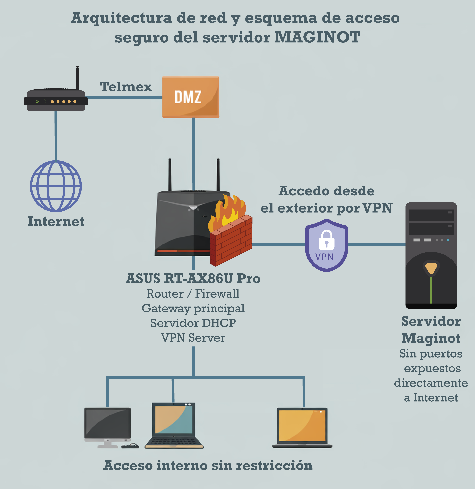

Servidor MAGINOT - Anexo I
Preface
El servidor MAGINOT es un equipo de cómputo orientado principalmente a flujos de trabajo bioinformáticos, diseñado con énfasis en reproducibilidad, seguridad y mantenibilidad. Su objetivo es centralizar recursos (CPU, GPU, almacenamiento y software) y ofrecer un esquema de acceso remoto controlado para usuarios autorizados.
Este documento funciona como una bitácora técnica: registra decisiones de configuración, comandos, rutas, servicios y cambios relevantes realizados en MAGINOT. La intención es que sirva como evidencia (anexo) y como guía operativa para mantenimiento, respaldo y futuras ampliaciones, facilitando la continuidad del servicio y la trazabilidad de las configuraciones.
Alcance de la bitácora
Incluye:
Configuración de red y esquema de acceso remoto seguro.
Montaje y organización de almacenamiento.
Gestión de usuarios y políticas básicas.
Organización de software (módulos/ambientes/contenedores) cuando aplique.
Monitoreo y verificación de servicios.
Registro de cambios y notas operativas.
Ficha técnica del servidor MAGINOT
Nombre del host:
maginotSistema operativo: Rocky Linux 10.1 (Red Quartz)
Kernel: Linux 6.12.0-124.21.1.el10_1.x86_64
Arquitectura: x86_64
Plataforma/board: MACHINIST E5-D8-MAX (Firmware 5.11, 2023-04-19)
CPU
Modelo: Intel® Xeon® E5-2695 v4 @ 2.10 GHz
Sockets: 2
Cores por socket: 18
Hilos por core: 2
Total: 36 cores / 72 hilos
Frecuencia máx.: 3.30 GHz (según
lscpu)
Memoria RAM
Total usable: ~251 GiB (según
free -h)Configuración física: 8 × 32 GB = 256 GB
Tipo: DDR4 ECC (ancho 72 bits)
Velocidad configurada: 2400 MT/s
Nota: la diferencia entre 256 GB físicos y ~251 GiB visibles es normal por conversión GB/GiB y reserva del sistema.
GPU
Modelo: NVIDIA GeForce RTX 3070 (8 GB VRAM)
Driver: 590.48.01
CUDA: 13.1 (según
nvidia-smi)
Almacenamiento y puntos de montaje (XFS)
Disco NVMe (sistema):
NVMe: Predator SSD GM7 M.2 2TB (1.9T)
/(root): 70G (LVM)/home: 1.8T (LVM)/booty/boot/efi
Discos SATA (datos en /srv):
/srv/call(CALL) — 4 TB (WDC WD40EZAX)/srv/ash(ASH) — 4 TB (WDC WD40EZRZ)/srv/david(DAVID) — 6 TB (WDC WD60EFRX)/srv/walter(WALTER) — 6 TB (WDC WD60EFRX)/srv/bishop(BISHOP) — 6 TB (WDC WD60PURX)
Nota: Todos los volúmenes de datos están formateados en XFS y montados de forma persistente bajo
/srv.
Red (resumen)
Interfaz LAN:
enp6s0IP LAN: 192.168.50.211/24
Gateway: 192.168.50.1
VPN WireGuard:
wg0→ 10.8.0.1/24Overlay adicional:
tailscale0(100.105.117.111/32)DNS (según resolv.conf): 100.100.100.100 (Tailscale)
Arquitectura de red y acceso
MAGINOT se integra a la red mediante un esquema perimetral donde el enlace de Internet de Telmex delega conectividad hacia una DMZ, y el control de seguridad queda a cargo del ASUS RT-AX86U Pro, que opera como gateway/firewall y servidor de servicios de red (DHCP). En este diseño:
El equipo Telmex entrega conectividad hacia el ASUS mediante DMZ.
El ASUS funciona como gateway principal y firewall (NAT/políticas).
El servicio de VPN (WireGuard) está hospedado en MAGINOT; el ASUS únicamente expone/redirige el puerto de la VPN hacia el servidor.
Acceso interno (LAN): sin restricciones adicionales.
El servidor MAGINOT no expone puertos directamente a Internet; el único punto de entrada remoto es el puerto de VPN publicado por el gateway.
